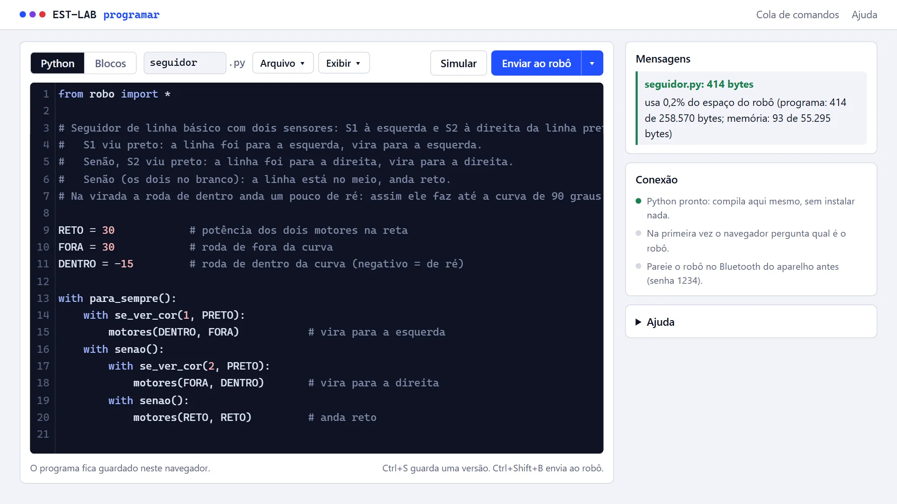
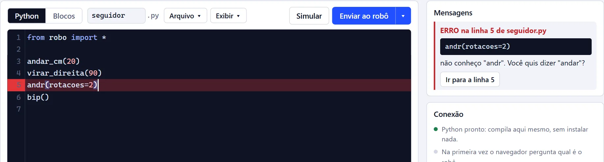
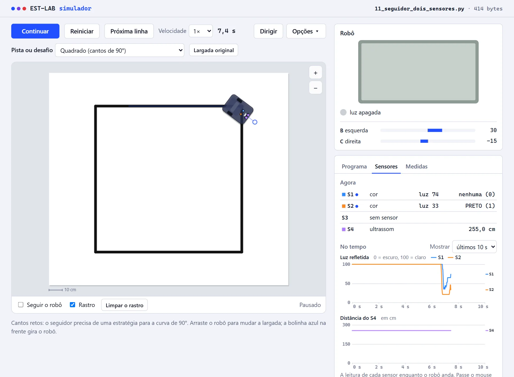
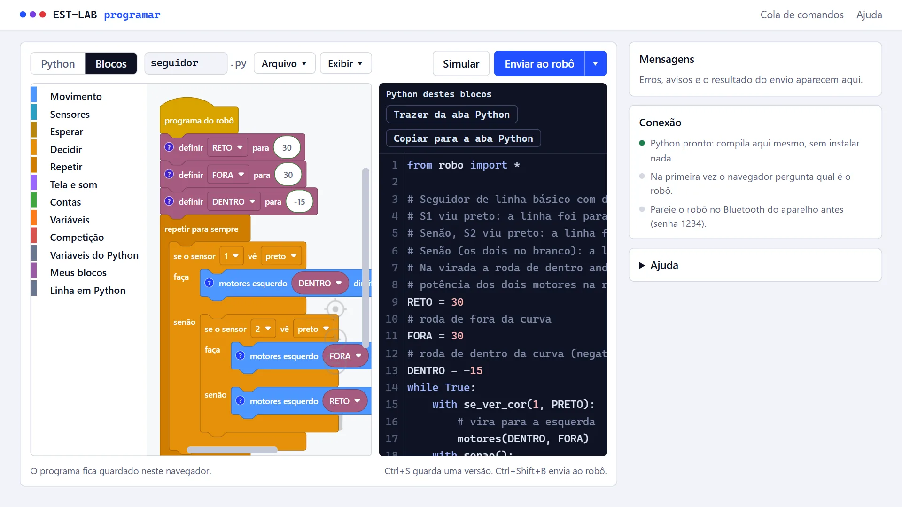

EST is an educational robot used in Brazilian schools, similar to LEGO EV3. Its official
software is a closed block editor for Windows. EST-LAB compiles Python to the controller's own bytecode and
sends it over USB, from VS Code or from a web page, with commands in Portuguese like andar_cm(30)
(move 30 cm) and virar_direita(90) (turn right 90°).
I'm Andrey Violante, a robotics teacher in Maricá, Rio de Janeiro, and a software engineering student. I built EST-LAB for my own classes; it is free and open source.
Open the programming page Source code
The interface is in Portuguese, because it is made for Brazilian students. No robot? Try the line follower in the simulator.

The compiler produces, byte for byte, the same programs the official IDE produces for the same blocks. What changes is everything around it: students write text in their own language, watch the robot run before sending, and get errors they can understand.
Python's if, while and for work with sensor readings. Errors point to
the line and say what to do, in Portuguese; a typo like andr gets "did you mean
andar?".
Before sending, it also warns about likely mistakes: a variable that is never used, a loop that never waits, a motor left running when the program ends.

The simulator runs the exact bytes that go to the robot, on a track seen from above, with the screen, the light, the motors and every sensor reading. It steps through the program one Python line at a time.
It has line-following tracks, an arena with the scoring rules of the Brazilian Robotics Olympiad (OBR) and 15 automatically graded challenges, and it can record the run as a video to share.

For students coming from block programming: drag blocks and see the Python they generate. It also goes the other way, turning a Python program into blocks, and both compile to the same bytes.
On Android phones and tablets the page installs to the home screen and works offline.

There was no documentation, SDK or source code for the controller. Everything below came from observing what the official IDE sends to the robot and reading what its executable does.
I captured the USB traffic of the official IDE and the files it writes while sending a program, and decompiled its executable with Ghidra to read the compiler's tables and the upload code.
From that came the USB HID protocol (frames, checksums, the upload sequence, programs split in 1014-byte chunks), the bytecode format (instructions, registers, and one thread per loop body and branch) and the IDE's project file format. EST-LAB uses none of the vendor's code and the robot's firmware is not changed.
The student's file runs once on the computer. Each command adds a block to the program; an AST rewrite
turns if, while, for, break, and and
or on sensor readings into decisions and loops that run on the robot, and arithmetic on
readings becomes the robot's own math blocks.
The blocks are compiled to bytecode by a Python module that reproduces the IDE's output exactly. A test compares it, byte for byte, with 13 programs compiled by the official IDE.
A JavaScript virtual machine executes the same bytecode, with simple physics for the motors (acceleration, braking, wheel geometry), a color sensor that averages a small spot on the floor, and an ultrasonic sensor that casts a cone of rays.
The challenges are graded by watching the run (checkpoints, time, stopping on the finish line), so the same program can be checked in the browser and in the automated tests.
The same Python compiler runs in the browser through Pyodide (Python compiled to WebAssembly) in a Web Worker, so the page needs no server. Programs go to the robot over WebHID, and Bluetooth on Android uses Web Serial (still being tested on the robot).
Blocks use Blockly, with a converter from Python to blocks. A program can be shared as a link: it is
compressed into the part of the URL after #, which never reaches a server.
Every push runs the test suite on GitHub Actions, on Windows: byte-exact compiler checks, the language and error messages, the simulator, the challenges, and an end-to-end test of the whole page in headless Chrome, including a phone-sized screen.
Pushing a version tag builds the Windows package (with an embedded Python, so schools need no admin rights), tests it and publishes the release. Installed copies update themselves from VS Code.
The project includes a teacher's guide with eight lessons, a two-page command sheet, a guide for the OBR competition, and a tutorial that teaches AI assistants the language, so they stop inventing commands.
The code is MIT-licensed and has a permanent DOI on Zenodo: 10.5281/zenodo.23692767.
A line follower with two color sensors. motores sets the left and right wheels,
cor_vista reads the color under a sensor and PRETO is black.
from robo import *
while True:
if cor_vista(1) == PRETO: # left sensor on the line
motores(-15, 30)
elif cor_vista(2) == PRETO: # right sensor on the line
motores(30, -15)
else:
motores(30, 30)The while becomes a loop on the robot, and each if becomes a decision on a
sensor reading. The result is a 516-byte program that runs on the controller without a computer attached.
Open this example in the programming page: it compiles in the browser and opens the simulator. The program travels inside the link.